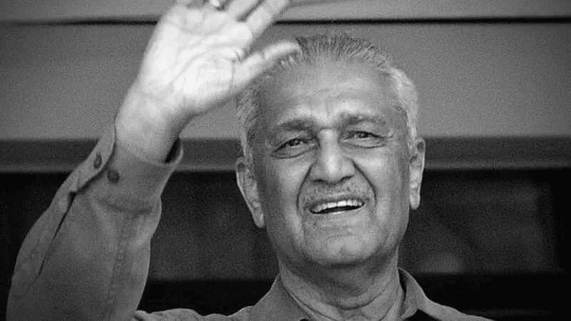

1 April 1936 – 10 October 2021
"Quote"
"The only limit to our realization of tomorrow will be our doubts
of today. Abdul Qadeer Khan."
"The only limit to our realization of tomorrow will be our doubts
of today. Abdul Qadeer Khan."